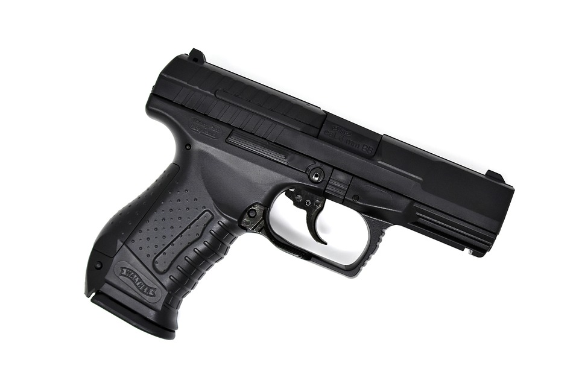
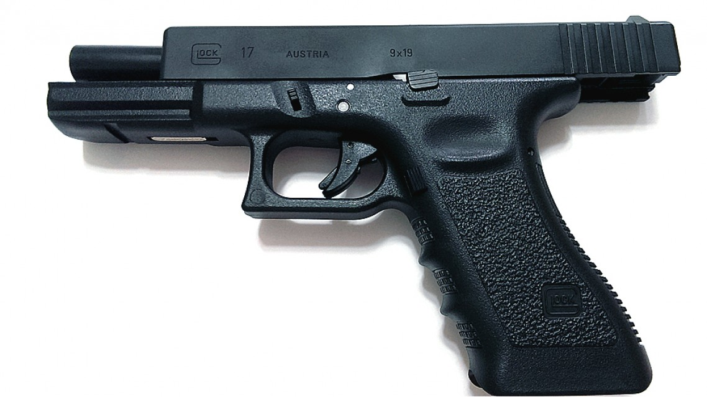
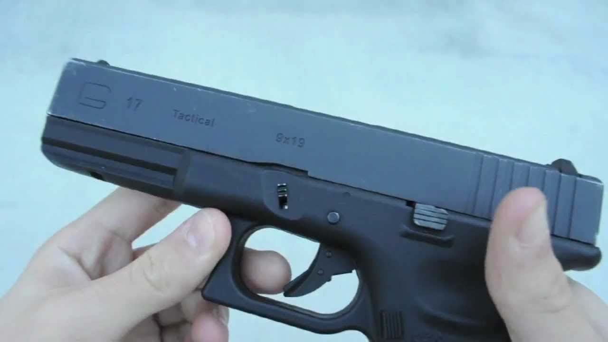
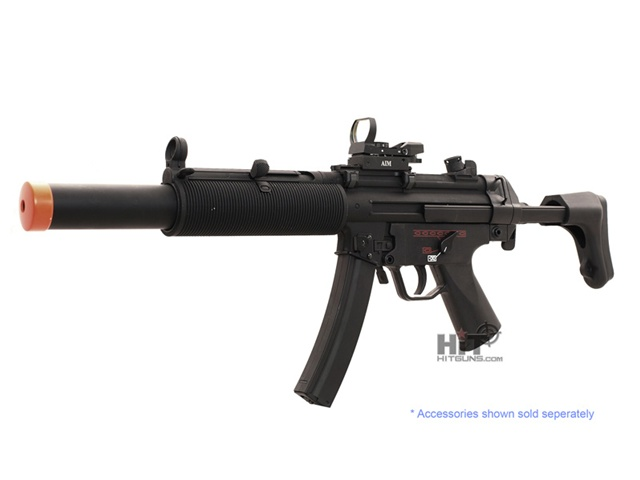
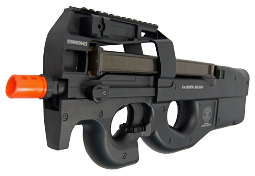
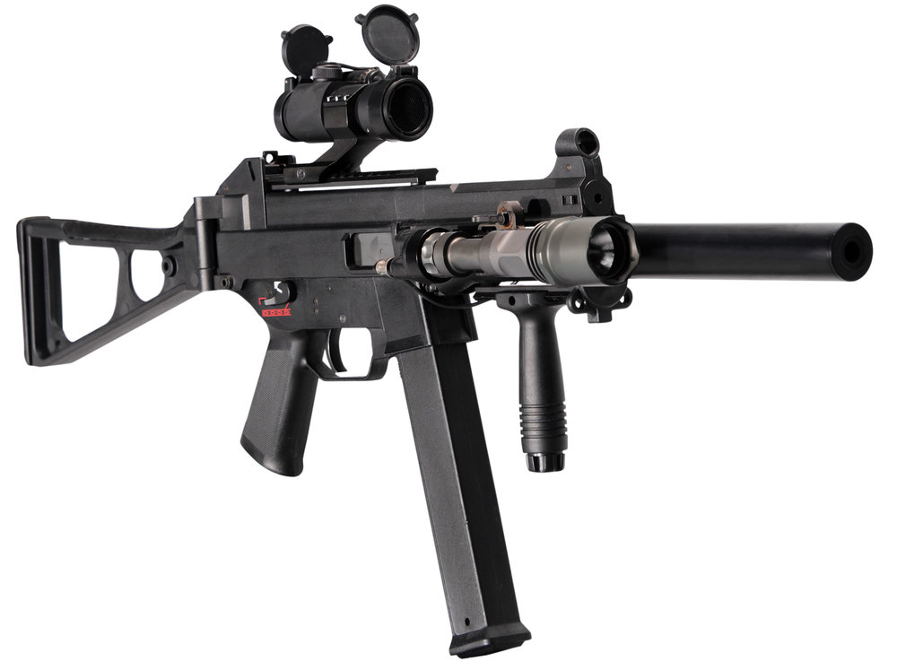

Airsoft memiliki berbagai macam jenis, mulai dari tipenya sampai dengan power/sumber tenaga nya.
Mulai dari Tipe nya, Airsoft memiliki berbagai tipe sesuai dengan Senjata Asli nya, mengingat Airsoft Gun adalah replika dari senjata asli
Yang pertama Adalah Handgun atau lebih sering dikenal dengan p*stol, ini adalah tipe yang biasa digunakan untuk jangkauan jarak pendek dan digunakan dalam turnamen AA IPSC.

Yang kedua adalah SMG(Sub Machine Gun) ini adalah tipe yang digunakan dalam CQB(Close Quarter Battle) jarak pendek maupun menengah.

1 | 2 | 3